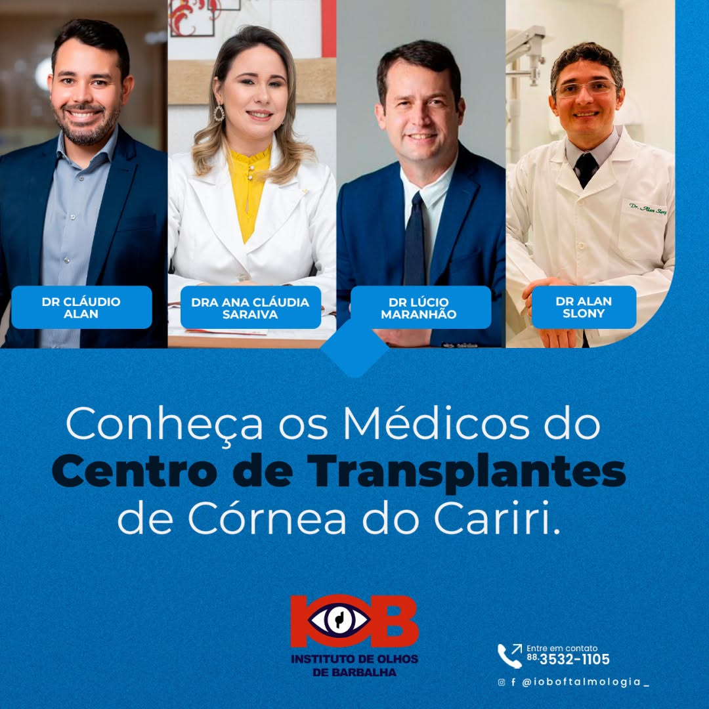
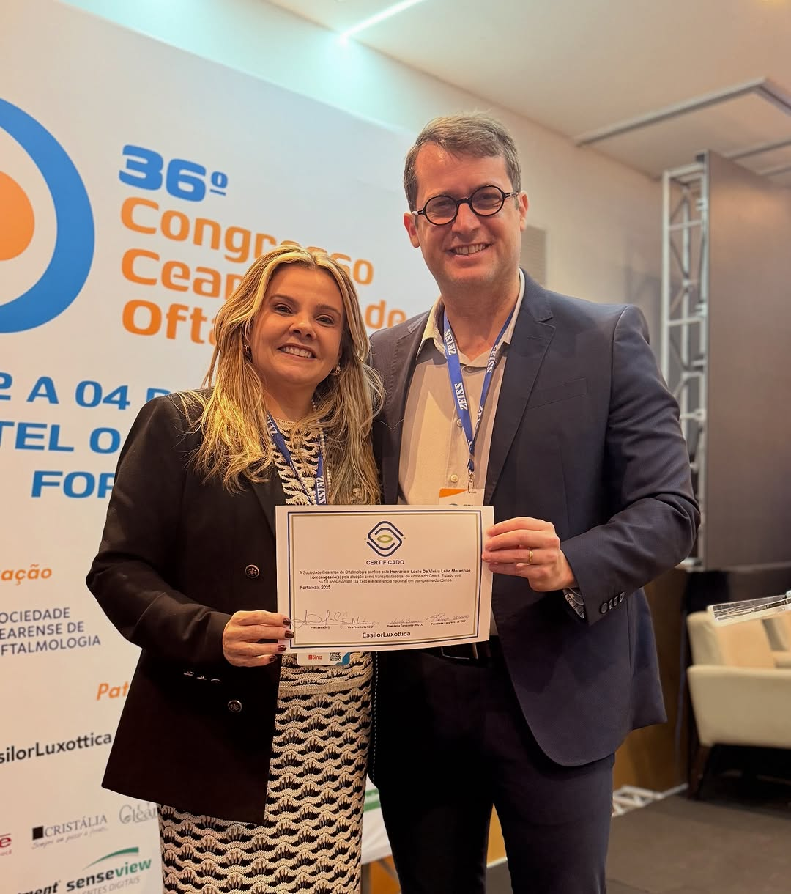
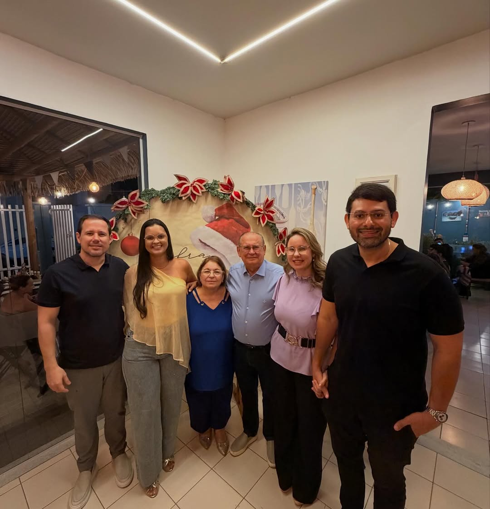
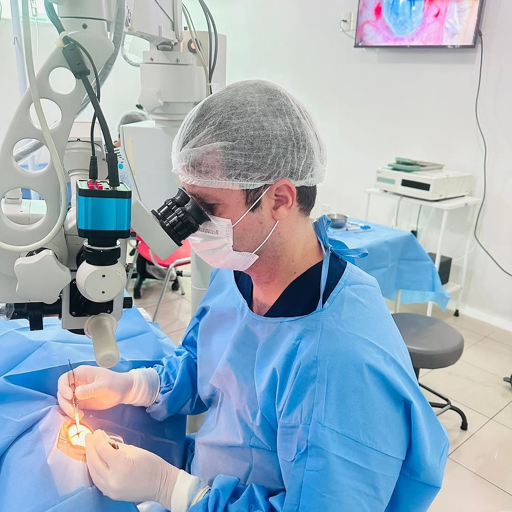
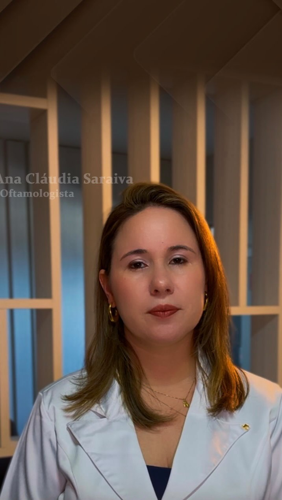
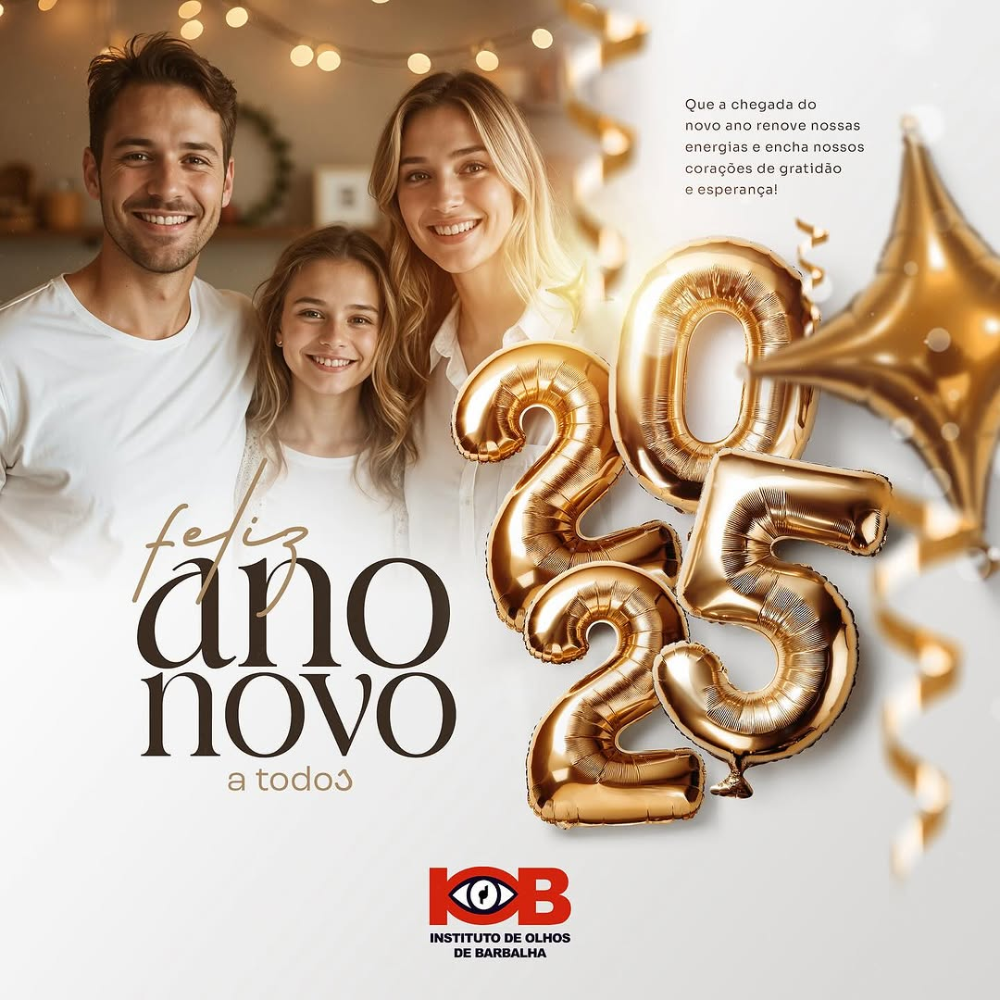

Transplante de Córnea
Centro especializado em transplantes de córnea com técnicas modernas DMEK, DSEK e DALK. Atendimento pelo SUS através do programa Fila Zero.
Saiba maisOftalmologia clínica e cirúrgica com equipe especializada em transplantes de córnea. Atendimento humanizado e técnicas modernas para recuperação da sua visão.

Oftalmologia completa com especialização em transplantes de córnea e cirurgias oculares no Cariri cearense.
Centro especializado em transplantes de córnea com técnicas modernas DMEK, DSEK e DALK. Atendimento pelo SUS através do programa Fila Zero.
Saiba mais
Cirurgia de catarata com tecnologia avançada e recuperação rápida. Procedimento seguro para recuperação da visão.
Saiba mais
Consultas oftalmológicas completas para diagnóstico e tratamento de doenças oculares com equipe especializada.
Saiba mais
Tratamento especializado de doenças da retina e vítreo com acompanhamento de retinólogo experiente.
Saiba maisCentro de referência em transplantes de córnea no Cariri, com técnicas DMEK, DSEK, DALK e PK adaptadas a cada caso.
Nossa equipe participa de congressos e treinamentos nacionais e internacionais para oferecer o que há de mais moderno em oftalmologia.
Parceria com o programa Fila Zero do Ceará, realizando transplantes pelo sistema público de saúde.
Cada paciente recebe atenção personalizada, desde o diagnóstico até o acompanhamento pós-operatório completo.

Cirurgia de Catarata
CRM 9964 RQE 4432

Retinólogo
CRM-CE


Transplante de córnea DMEK


Transplante de córnea DSEK

Cirurgia de catarata
“Depois de anos sem enxergar direito, fiz o transplante pelo SUS aqui no Instituto. Hoje tenho minha vida de volta. Gratidão eterna à equipe.”
Maria S.
“Atendimento atencioso desde a primeira consulta. A cirurgia foi tranquila e a recuperação rápida. Recomendo.”
José A.
“O Dr. Eduardo me acompanha há dois anos. Profissional dedicado que explica tudo com paciência. Me sinto segura no tratamento.”
Francisca L.
DMEK e DSEK para transplante apenas da camada doente da córnea, com recuperação mais rápida e menor risco de rejeição.
Equipamentos de última geração para procedimentos de alta precisão em cirurgias de córnea e catarata.
Parceria com a Central de Transplantes do Ceará para agilidade no acesso a córneas para transplante.
Horarios
Segunda a sexta: consulte horários
Financiamento
Aceitamos convênios e atendimento SUS pelo programa Fila Zero
Endereco
R. Sete de Setembro, 230 - Centro, Barbalha - CE, 63180-000, Brazil
63180-000 — Barbalha
Contato
Agende uma consulta de avaliação com nossa equipe especializada em saúde ocular e transplantes de córnea no Cariri.
Agende sua consulta